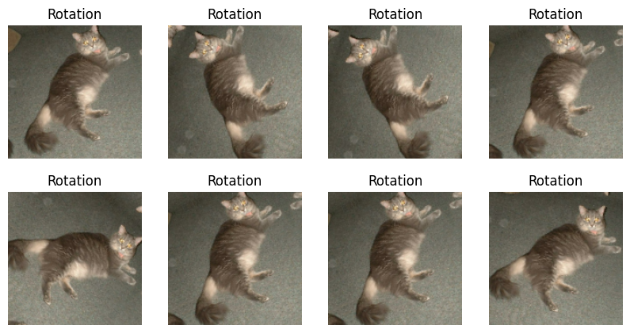

import os
from keras import utils
import tensorflow_datasets as tfdsIntroduction
This blogpost is to show the power of machine learning model using TensorFlow to distinguish images between cats and dogs. To accomplish this task, we would need to know data processing, model building, and the leveraging of advanced machine learning techniques with computer vision and neural networks.
Load Packages and Obtain Data
We are going to use the “cats_vs_dogs” dataset from TFDS. We will divide them into training, validation, and test sets.
train_ds, validation_ds, test_ds = tfds.load(
"cats_vs_dogs",
# 40% for training, 10% for validation, and 10% for test (the rest unused)
split=["train[:40%]", "train[40%:50%]", "train[50%:60%]"],
as_supervised=True, # Include labels
)
print(f"Number of training samples: {train_ds.cardinality()}")
print(f"Number of validation samples: {validation_ds.cardinality()}")
print(f"Number of test samples: {test_ds.cardinality()}")Downloading and preparing dataset 786.67 MiB (download: 786.67 MiB, generated: 1.04 GiB, total: 1.81 GiB) to /root/tensorflow_datasets/cats_vs_dogs/4.0.1...
Dataset cats_vs_dogs downloaded and prepared to /root/tensorflow_datasets/cats_vs_dogs/4.0.1. Subsequent calls will reuse this data.
Number of training samples: 9305
Number of validation samples: 2326
Number of test samples: 2326WARNING:absl:1738 images were corrupted and were skippedNow we created datasets for training, validation, and testing.
The next step we need to do is to resize the images in the dataset into the size of 150 x 150
import kerasresize_fn = keras.layers.Resizing(150, 150)
train_ds = train_ds.map(lambda x, y: (resize_fn(x), y))
validation_ds = validation_ds.map(lambda x, y: (resize_fn(x), y))
test_ds = test_ds.map(lambda x, y: (resize_fn(x), y))from tensorflow import data as tf_data
batch_size = 64
train_ds = train_ds.batch(batch_size).prefetch(tf_data.AUTOTUNE).cache()
validation_ds = validation_ds.batch(batch_size).prefetch(tf_data.AUTOTUNE).cache()
test_ds = test_ds.batch(batch_size).prefetch(tf_data.AUTOTUNE).cache()Two-row Visualization
Before diving into building models, let’s visualize some images of cats and dogs.
import matplotlib.pyplot as plt
def visualization(train_ds):
plt.figure(figsize=(10, 5))
cat_images = []
dog_images = []
# Get first three images of cats and dogs
for images, labels in train_ds.unbatch().as_numpy_iterator():
if labels == 0 and len(cat_images) < 3:
cat_images.append(images)
elif labels == 1 and len(dog_images) < 3:
dog_images.append(images)
for i in range(3): # First three cats
plt.subplot(2, 3, i + 1)
plt.imshow(cat_images[i].astype("uint8"))
plt.axis("off")
plt.title("Cat")
for i in range(3): # First three dogs
plt.subplot(2, 3, i + 4) # Dogs start from the 4th position
plt.imshow(dog_images[i].astype("uint8"))
plt.axis("off")
plt.title("Dog")
plt.show()
visualization(train_ds)
Compute the Number of Images
We are going to compute the number of images in the training set using the labels_iterator defined.
And then the baseline model is going to show you the most frequent label.
labels_iterator= train_ds.unbatch().map(lambda image, label: label).as_numpy_iterator()cat_count = 0
dog_count = 0
# Iterate in the dataset and count cats and dogs
for label in labels_iterator:
if label == 0:
cat_count += 1
elif label == 1:
dog_count += 1
print(f"Number of cat images: {cat_count}")
print(f"Number of dog images: {dog_count}")
# Calculate the baseline model accuracy
total_images = cat_count + dog_count
most_frequent_label_count = max(cat_count, dog_count)
baseline_accuracy = most_frequent_label_count / total_images
print(f"Baseline model accuracy: {baseline_accuracy:.2f}")Number of cat images: 4637
Number of dog images: 4668
Baseline model accuracy: 0.50The baseline model gave us the accuracy of 50 percent. Now we will dive into building machine learning models to improve this accuracy.
Model 1
The first model is the model of keras.Sequential model using some of the layers :
at least two Conv2D layers,
at least two MaxPooling2D layers,
at least one Flatten layer,
at least one Dense layer,
and at least one Dropout layer.
After building the model 1, we will train the model and plot the history of the accuracy on both the training and validation sets.
from keras import datasets, layers, models
model1 = models.Sequential([
layers.Input((150, 150, 3)),
# First Convolutional Block
layers.Conv2D(32, (3, 3), activation='relu'),
layers.MaxPooling2D((2, 2)),
# Second Convolutional Block
layers.Conv2D(64, (3, 3), activation='relu'),
layers.MaxPooling2D((2, 2)),
layers.Flatten(),
layers.Dense(64, activation='relu'),
layers.Dropout(0.2),
layers.Dense(1, activation='sigmoid') # for binary classification
])
# Compile the model
model1.compile(optimizer='adam',
loss='binary_crossentropy', # for binary classification
metrics=['accuracy'])
model1.summary()
# Train the model
history = model1.fit(train_ds,
epochs=20,
validation_data=validation_ds)
# Plot the training and validation accuracy
import matplotlib.pyplot as plt
plt.plot(history.history["accuracy"], label = "training")
plt.plot(history.history["val_accuracy"], label = "validation")
plt.gca().set(xlabel = "epoch", ylabel = "accuracy")
plt.legend()Model: "sequential"
_________________________________________________________________
Layer (type) Output Shape Param #
=================================================================
conv2d (Conv2D) (None, 148, 148, 32) 896
max_pooling2d (MaxPooling2 (None, 74, 74, 32) 0
D)
conv2d_1 (Conv2D) (None, 72, 72, 64) 18496
max_pooling2d_1 (MaxPoolin (None, 36, 36, 64) 0
g2D)
flatten (Flatten) (None, 82944) 0
dense (Dense) (None, 64) 5308480
dropout (Dropout) (None, 64) 0
dense_1 (Dense) (None, 1) 65
=================================================================
Total params: 5327937 (20.32 MB)
Trainable params: 5327937 (20.32 MB)
Non-trainable params: 0 (0.00 Byte)
_________________________________________________________________
Epoch 1/20
146/146 [==============================] - 18s 70ms/step - loss: 28.7778 - accuracy: 0.5525 - val_loss: 0.6760 - val_accuracy: 0.5722
Epoch 2/20
146/146 [==============================] - 5s 32ms/step - loss: 0.6321 - accuracy: 0.6361 - val_loss: 0.6730 - val_accuracy: 0.5881
Epoch 3/20
146/146 [==============================] - 5s 34ms/step - loss: 0.5104 - accuracy: 0.7269 - val_loss: 0.7193 - val_accuracy: 0.5937
Epoch 4/20
146/146 [==============================] - 5s 32ms/step - loss: 0.4314 - accuracy: 0.7783 - val_loss: 0.8652 - val_accuracy: 0.5830
Epoch 5/20
146/146 [==============================] - 5s 32ms/step - loss: 0.3516 - accuracy: 0.8275 - val_loss: 1.0036 - val_accuracy: 0.6015
Epoch 6/20
146/146 [==============================] - 5s 33ms/step - loss: 0.2980 - accuracy: 0.8598 - val_loss: 1.1715 - val_accuracy: 0.6337
Epoch 7/20
146/146 [==============================] - 5s 32ms/step - loss: 0.2789 - accuracy: 0.8848 - val_loss: 1.5469 - val_accuracy: 0.5985
Epoch 8/20
146/146 [==============================] - 5s 32ms/step - loss: 0.2414 - accuracy: 0.8921 - val_loss: 1.3987 - val_accuracy: 0.6071
Epoch 9/20
146/146 [==============================] - 5s 32ms/step - loss: 0.1998 - accuracy: 0.9207 - val_loss: 1.3468 - val_accuracy: 0.6066
Epoch 10/20
146/146 [==============================] - 5s 32ms/step - loss: 0.2025 - accuracy: 0.9237 - val_loss: 1.5451 - val_accuracy: 0.5929
Epoch 11/20
146/146 [==============================] - 5s 33ms/step - loss: 0.1972 - accuracy: 0.9265 - val_loss: 1.7485 - val_accuracy: 0.5933
Epoch 12/20
146/146 [==============================] - 5s 32ms/step - loss: 0.1592 - accuracy: 0.9425 - val_loss: 2.0177 - val_accuracy: 0.5997
Epoch 13/20
146/146 [==============================] - 5s 32ms/step - loss: 0.1185 - accuracy: 0.9599 - val_loss: 1.9909 - val_accuracy: 0.6019
Epoch 14/20
146/146 [==============================] - 5s 32ms/step - loss: 0.1056 - accuracy: 0.9607 - val_loss: 1.9737 - val_accuracy: 0.6015
Epoch 15/20
146/146 [==============================] - 5s 32ms/step - loss: 0.0907 - accuracy: 0.9673 - val_loss: 2.3578 - val_accuracy: 0.6174
Epoch 16/20
146/146 [==============================] - 5s 32ms/step - loss: 0.0813 - accuracy: 0.9707 - val_loss: 2.7964 - val_accuracy: 0.6071
Epoch 17/20
146/146 [==============================] - 5s 32ms/step - loss: 0.0795 - accuracy: 0.9759 - val_loss: 2.4799 - val_accuracy: 0.6045
Epoch 18/20
146/146 [==============================] - 5s 32ms/step - loss: 0.0685 - accuracy: 0.9759 - val_loss: 2.7452 - val_accuracy: 0.6023
Epoch 19/20
146/146 [==============================] - 5s 33ms/step - loss: 0.0693 - accuracy: 0.9785 - val_loss: 2.4840 - val_accuracy: 0.6204
Epoch 20/20
146/146 [==============================] - 5s 32ms/step - loss: 0.0517 - accuracy: 0.9838 - val_loss: 2.7648 - val_accuracy: 0.6109
Cmment on Model 1
The validation accuracy of the model stabilized between 58% and 62% during training with the highest peak reaching 63.37% around the 6th epoch.
The model 1 performed better than the baseline model, with a final validation accuracy exceeding the baseline by about 11%.
Overfitting is observed in model1. The training accuracy continues to increase throughout the epochs, reaching as high as 98.38% by the end of training, while the validation stayed between 58% and 62%.
Data Augmentation
Data augmentation refers to the practice of including modified copies of the same image in the training set. We can include the picture of flipped or rotated in our training process in order to help our model learn so-called invariant features of our input images.
RandomFlip
We will first create a keras.layers.RandomFlip() layer. and make a plot of a few copies of RandomFlip() images.
from keras import layers
for images, _ in train_ds.take(1):
original_image = images[50]
plt.figure(figsize=(10, 5))
# Random Flip
flip = layers.RandomFlip("horizontal_and_vertical")
for i in range(1, 9):
plt.subplot(2, 4, i)
flip_image = flip(original_image, training=True)
plt.imshow(flip_image.numpy().astype("uint8"))
plt.title("Flip")
plt.axis("off")
plt.show()RandomRotation
Next, we will create a keras.layers.RandomRotation() layer. Againm we will make a plot of a few copies of RandomRotation() images.
for images, _ in train_ds.take(1):
original_image = images[50]
plt.figure(figsize=(10, 5))
# Random Rotation
rotation = layers.RandomRotation(0.2)
for i in range(1, 9):
plt.subplot(2, 4, i)
rotate_image = rotation(original_image, training=True)
plt.imshow(rotate_image.numpy().astype("uint8"))
plt.title("Rotation")
plt.axis("off")
plt.show()
Model 2
Now, we will create a new keras.models.Sequential model called model2, in which the first two layers are augmentation layers. We wil also using the RandomFlip() layer and the RandomRotation() layer.
from tensorflow.keras import layers, models, optimizers, losses
model2 = models.Sequential([
layers.Input((150, 150, 3)),
#RandomFlip() layer and a RandomRotation() layer
layers.RandomFlip("horizontal_and_vertical"),
layers.RandaomRotation(0.2),
layers.Conv2D(32, (3, 3), activation='relu'),
layers.MaxPooling2D((2, 2)),
layers.Conv2D(64, (3, 3), activation='relu'),
layers.MaxPooling2D((2, 2)),
layers.Flatten(),
layers.Dense(64, activation='relu'),
layers.Dropout(0.2),
layers.Dense(1, activation='sigmoid')
])
model2.compile(optimizer = 'adam',
loss=losses.BinaryCrossentropy(from_logits=False),
metrics = ['accuracy'])
model2.summary()
history = model2.fit(train_ds,
epochs=20,
validation_data=validation_ds)
plt.plot(history.history["accuracy"], label = "training")
plt.plot(history.history["val_accuracy"], label = "validation")
plt.gca().set(xlabel = "epoch", ylabel = "accuracy")
plt.legend()Model: "sequential_1"
_________________________________________________________________
Layer (type) Output Shape Param #
=================================================================
random_flip_1 (RandomFlip) (None, 150, 150, 3) 0
random_rotation_1 (RandomR (None, 150, 150, 3) 0
otation)
conv2d_2 (Conv2D) (None, 148, 148, 32) 896
max_pooling2d_2 (MaxPoolin (None, 74, 74, 32) 0
g2D)
conv2d_3 (Conv2D) (None, 72, 72, 64) 18496
max_pooling2d_3 (MaxPoolin (None, 36, 36, 64) 0
g2D)
flatten_1 (Flatten) (None, 82944) 0
dense_2 (Dense) (None, 64) 5308480
dropout_1 (Dropout) (None, 64) 0
dense_3 (Dense) (None, 1) 65
=================================================================
Total params: 5327937 (20.32 MB)
Trainable params: 5327937 (20.32 MB)
Non-trainable params: 0 (0.00 Byte)
_________________________________________________________________
Epoch 1/20
146/146 [==============================] - 8s 38ms/step - loss: 31.7002 - accuracy: 0.5430 - val_loss: 0.6609 - val_accuracy: 0.5791
Epoch 2/20
146/146 [==============================] - 5s 36ms/step - loss: 0.6764 - accuracy: 0.5846 - val_loss: 0.6701 - val_accuracy: 0.5804
Epoch 3/20
146/146 [==============================] - 5s 35ms/step - loss: 0.6670 - accuracy: 0.5731 - val_loss: 0.6599 - val_accuracy: 0.6187
Epoch 4/20
146/146 [==============================] - 5s 36ms/step - loss: 0.6628 - accuracy: 0.5884 - val_loss: 0.6694 - val_accuracy: 0.5873
Epoch 5/20
146/146 [==============================] - 5s 35ms/step - loss: 0.6718 - accuracy: 0.5790 - val_loss: 0.6574 - val_accuracy: 0.6096
Epoch 6/20
146/146 [==============================] - 5s 37ms/step - loss: 0.6585 - accuracy: 0.6124 - val_loss: 0.6539 - val_accuracy: 0.5993
Epoch 7/20
146/146 [==============================] - 5s 35ms/step - loss: 0.6421 - accuracy: 0.6343 - val_loss: 0.6362 - val_accuracy: 0.6285
Epoch 8/20
146/146 [==============================] - 5s 36ms/step - loss: 0.6518 - accuracy: 0.6232 - val_loss: 0.6345 - val_accuracy: 0.6341
Epoch 9/20
146/146 [==============================] - 5s 35ms/step - loss: 0.6433 - accuracy: 0.6336 - val_loss: 0.6198 - val_accuracy: 0.6531
Epoch 10/20
146/146 [==============================] - 5s 36ms/step - loss: 0.6276 - accuracy: 0.6469 - val_loss: 0.6193 - val_accuracy: 0.6617
Epoch 11/20
146/146 [==============================] - 5s 35ms/step - loss: 0.6197 - accuracy: 0.6502 - val_loss: 0.6208 - val_accuracy: 0.6531
Epoch 12/20
146/146 [==============================] - 5s 37ms/step - loss: 0.6136 - accuracy: 0.6636 - val_loss: 0.6074 - val_accuracy: 0.6763
Epoch 13/20
146/146 [==============================] - 5s 35ms/step - loss: 0.6080 - accuracy: 0.6663 - val_loss: 0.6145 - val_accuracy: 0.6578
Epoch 14/20
146/146 [==============================] - 5s 36ms/step - loss: 0.6126 - accuracy: 0.6620 - val_loss: 0.5976 - val_accuracy: 0.6776
Epoch 15/20
146/146 [==============================] - 5s 35ms/step - loss: 0.6103 - accuracy: 0.6660 - val_loss: 0.6001 - val_accuracy: 0.6745
Epoch 16/20
146/146 [==============================] - 5s 36ms/step - loss: 0.6027 - accuracy: 0.6742 - val_loss: 0.5892 - val_accuracy: 0.6844
Epoch 17/20
146/146 [==============================] - 5s 35ms/step - loss: 0.6093 - accuracy: 0.6686 - val_loss: 0.6065 - val_accuracy: 0.6763
Epoch 18/20
146/146 [==============================] - 5s 35ms/step - loss: 0.6100 - accuracy: 0.6689 - val_loss: 0.5978 - val_accuracy: 0.6849
Epoch 19/20
146/146 [==============================] - 5s 35ms/step - loss: 0.6030 - accuracy: 0.6685 - val_loss: 0.5957 - val_accuracy: 0.6853
Epoch 20/20
146/146 [==============================] - 5s 36ms/step - loss: 0.6074 - accuracy: 0.6710 - val_loss: 0.5892 - val_accuracy: 0.6939
Model 3
Sometimes, it can be helpful to make simple transformations to the input data.
The preprocessing layer code will create preprocessor layer which we can slot into the new model pipeline.
i = keras.Input(shape=(150, 150, 3))
# The pixel values have the range of (0, 255), but many models will work better if rescaled to (-1, 1.)
# outputs: `(inputs * scale) + offset`
scale_layer = keras.layers.Rescaling(scale=1 / 127.5, offset=-1)
x = scale_layer(i)
preprocessor = keras.Model(inputs = i, outputs = x)
model3 = models.Sequential([
preprocessor,
layers.RandomFlip("horizontal_and_vertical"),
layers.RandomRotation(0.2),
# First Convolutional Block
layers.Conv2D(32, (3, 3), activation='relu'),
layers.MaxPooling2D((2, 2)),
# Second Convolutional Block
layers.Conv2D(64, (3, 3), activation='relu'),
layers.MaxPooling2D((2, 2)),
# Adding additional Convolutional Block to enhance the model
layers.Conv2D(128, (3, 3), activation='relu'),
layers.MaxPooling2D((2, 2)),
layers.Flatten(),
layers.Dense(128, activation='relu'),
# Additional Dense layer for complexity
layers.Dense(64, activation='relu'),
layers.Dropout(0.2),
layers.Dense(1, activation='sigmoid')
])
model3.compile(optimizer = 'adam',
loss=losses.BinaryCrossentropy(from_logits=False),
metrics = ['accuracy'])
model3.summary()
history = model3.fit(train_ds,
epochs=20,
validation_data=validation_ds)
plt.plot(history.history["accuracy"], label = "training")
plt.plot(history.history["val_accuracy"], label = "validation")
plt.gca().set(xlabel = "epoch", ylabel = "accuracy")
plt.legend()Model: "sequential_2"
_________________________________________________________________
Layer (type) Output Shape Param #
=================================================================
model (Functional) (None, 150, 150, 3) 0
random_flip_2 (RandomFlip) (None, 150, 150, 3) 0
random_rotation_2 (RandomR (None, 150, 150, 3) 0
otation)
conv2d_4 (Conv2D) (None, 148, 148, 32) 896
max_pooling2d_4 (MaxPoolin (None, 74, 74, 32) 0
g2D)
conv2d_5 (Conv2D) (None, 72, 72, 64) 18496
max_pooling2d_5 (MaxPoolin (None, 36, 36, 64) 0
g2D)
conv2d_6 (Conv2D) (None, 34, 34, 128) 73856
max_pooling2d_6 (MaxPoolin (None, 17, 17, 128) 0
g2D)
flatten_2 (Flatten) (None, 36992) 0
dense_4 (Dense) (None, 128) 4735104
dense_5 (Dense) (None, 64) 8256
dropout_2 (Dropout) (None, 64) 0
dense_6 (Dense) (None, 1) 65
=================================================================
Total params: 4836673 (18.45 MB)
Trainable params: 4836673 (18.45 MB)
Non-trainable params: 0 (0.00 Byte)
_________________________________________________________________
Epoch 1/20
146/146 [==============================] - 10s 47ms/step - loss: 0.6571 - accuracy: 0.6048 - val_loss: 0.5811 - val_accuracy: 0.6943
Epoch 2/20
146/146 [==============================] - 6s 44ms/step - loss: 0.5950 - accuracy: 0.6846 - val_loss: 0.5476 - val_accuracy: 0.7206
Epoch 3/20
146/146 [==============================] - 6s 43ms/step - loss: 0.5700 - accuracy: 0.7020 - val_loss: 0.5358 - val_accuracy: 0.7326
Epoch 4/20
146/146 [==============================] - 6s 44ms/step - loss: 0.5577 - accuracy: 0.7130 - val_loss: 0.5183 - val_accuracy: 0.7365
Epoch 5/20
146/146 [==============================] - 6s 43ms/step - loss: 0.5440 - accuracy: 0.7236 - val_loss: 0.5162 - val_accuracy: 0.7412
Epoch 6/20
146/146 [==============================] - 6s 44ms/step - loss: 0.5261 - accuracy: 0.7342 - val_loss: 0.5177 - val_accuracy: 0.7412
Epoch 7/20
146/146 [==============================] - 6s 43ms/step - loss: 0.5160 - accuracy: 0.7422 - val_loss: 0.5068 - val_accuracy: 0.7549
Epoch 8/20
146/146 [==============================] - 6s 44ms/step - loss: 0.5051 - accuracy: 0.7509 - val_loss: 0.4928 - val_accuracy: 0.7683
Epoch 9/20
146/146 [==============================] - 6s 43ms/step - loss: 0.4862 - accuracy: 0.7656 - val_loss: 0.4933 - val_accuracy: 0.7678
Epoch 10/20
146/146 [==============================] - 6s 44ms/step - loss: 0.4811 - accuracy: 0.7673 - val_loss: 0.4745 - val_accuracy: 0.7794
Epoch 11/20
146/146 [==============================] - 6s 44ms/step - loss: 0.4702 - accuracy: 0.7760 - val_loss: 0.4845 - val_accuracy: 0.7687
Epoch 12/20
146/146 [==============================] - 6s 43ms/step - loss: 0.4578 - accuracy: 0.7802 - val_loss: 0.4796 - val_accuracy: 0.7721
Epoch 13/20
146/146 [==============================] - 6s 44ms/step - loss: 0.4536 - accuracy: 0.7866 - val_loss: 0.4598 - val_accuracy: 0.7923
Epoch 14/20
146/146 [==============================] - 6s 43ms/step - loss: 0.4391 - accuracy: 0.7959 - val_loss: 0.4418 - val_accuracy: 0.7945
Epoch 15/20
146/146 [==============================] - 6s 44ms/step - loss: 0.4298 - accuracy: 0.7999 - val_loss: 0.4554 - val_accuracy: 0.8005
Epoch 16/20
146/146 [==============================] - 6s 43ms/step - loss: 0.4163 - accuracy: 0.8089 - val_loss: 0.4331 - val_accuracy: 0.8035
Epoch 17/20
146/146 [==============================] - 6s 44ms/step - loss: 0.4111 - accuracy: 0.8113 - val_loss: 0.4206 - val_accuracy: 0.8044
Epoch 18/20
146/146 [==============================] - 6s 43ms/step - loss: 0.4110 - accuracy: 0.8119 - val_loss: 0.4224 - val_accuracy: 0.8156
Epoch 19/20
146/146 [==============================] - 6s 44ms/step - loss: 0.3887 - accuracy: 0.8219 - val_loss: 0.4275 - val_accuracy: 0.8190
Epoch 20/20
146/146 [==============================] - 6s 44ms/step - loss: 0.3814 - accuracy: 0.8250 - val_loss: 0.4193 - val_accuracy: 0.8237
Comment on Model 3
The validation accuracy of the model showed steady increase over the epochs,reached up to 82%.
Model3 showed improvement than model2, with the highest validation accuracy reaching about 82%. This is about 13% improvement compared to model1’s peak accuracy.
There is no overfitting in model3. The training and validation accuracies remain closer together throughout the iterations.
Model 4
To improve the model we have, we can use the pre-existing model. To do this, we need to first access a pre-existing “base model”, incorporate it into a full model for our current task, and then train that model.
In order to da that we will download MobileNetV3Large and configure it as a layer that can be included in the new model.
We should include :
The data augmentation layers from Model 2
The base_model_layer
A Dense(2) layer at the very end
GlobalMaxPooling2D
Dropout
IMG_SHAPE = (150, 150, 3)
base_model = keras.applications.MobileNetV3Large(input_shape=IMG_SHAPE,
include_top=False,
weights='imagenet')
base_model.trainable = False
i = keras.Input(shape=IMG_SHAPE)
x = base_model(i, training = False)
base_model_layer = keras.Model(inputs = i, outputs = x)
model4 = models.Sequential([
base_model_layer,
layers.RandomFlip("horizontal_and_vertical"),
layers.RandomRotation(0.2),
# Pooling layer to reduce dimensionality
layers.GlobalMaxPooling2D(),
layers.Dropout(0.2),
layers.Dense(16, activation='relu'),
layers.Dense(2, activation='softmax')
])
model4.compile(optimizer='adam',
loss=losses.SparseCategoricalCrossentropy(),
metrics=['accuracy'])
model4.summary()
history = model4.fit(train_ds,
epochs=20,
validation_data=validation_ds)
plt.plot(history.history["accuracy"], label = "training")
plt.plot(history.history["val_accuracy"], label = "validation")
plt.gca().set(xlabel = "epoch", ylabel = "accuracy")
plt.legend()WARNING:tensorflow:`input_shape` is undefined or non-square, or `rows` is not 224. Weights for input shape (224, 224) will be loaded as the default.Downloading data from https://storage.googleapis.com/tensorflow/keras-applications/mobilenet_v3/weights_mobilenet_v3_large_224_1.0_float_no_top_v2.h5
12683000/12683000 [==============================] - 1s 0us/step
Model: "sequential_3"
_________________________________________________________________
Layer (type) Output Shape Param #
=================================================================
model_1 (Functional) (None, 5, 5, 960) 2996352
random_flip_3 (RandomFlip) (None, 5, 5, 960) 0
random_rotation_3 (RandomR (None, 5, 5, 960) 0
otation)
global_max_pooling2d (Glob (None, 960) 0
alMaxPooling2D)
dropout_3 (Dropout) (None, 960) 0
dense_7 (Dense) (None, 16) 15376
dense_8 (Dense) (None, 2) 34
=================================================================
Total params: 3011762 (11.49 MB)
Trainable params: 15410 (60.20 KB)
Non-trainable params: 2996352 (11.43 MB)
_________________________________________________________________
Epoch 1/20
146/146 [==============================] - 16s 64ms/step - loss: 0.2915 - accuracy: 0.9270 - val_loss: 0.0856 - val_accuracy: 0.9669
Epoch 2/20
146/146 [==============================] - 7s 45ms/step - loss: 0.0885 - accuracy: 0.9666 - val_loss: 0.0703 - val_accuracy: 0.9712
Epoch 3/20
146/146 [==============================] - 7s 46ms/step - loss: 0.0738 - accuracy: 0.9723 - val_loss: 0.0666 - val_accuracy: 0.9755
Epoch 4/20
146/146 [==============================] - 6s 44ms/step - loss: 0.0691 - accuracy: 0.9737 - val_loss: 0.0716 - val_accuracy: 0.9746
Epoch 5/20
146/146 [==============================] - 7s 45ms/step - loss: 0.0646 - accuracy: 0.9756 - val_loss: 0.0691 - val_accuracy: 0.9746
Epoch 6/20
146/146 [==============================] - 6s 44ms/step - loss: 0.0570 - accuracy: 0.9786 - val_loss: 0.0682 - val_accuracy: 0.9781
Epoch 7/20
146/146 [==============================] - 7s 45ms/step - loss: 0.0543 - accuracy: 0.9782 - val_loss: 0.0735 - val_accuracy: 0.9764
Epoch 8/20
146/146 [==============================] - 6s 43ms/step - loss: 0.0544 - accuracy: 0.9776 - val_loss: 0.0759 - val_accuracy: 0.9755
Epoch 9/20
146/146 [==============================] - 7s 45ms/step - loss: 0.0506 - accuracy: 0.9815 - val_loss: 0.0762 - val_accuracy: 0.9755
Epoch 10/20
146/146 [==============================] - 6s 44ms/step - loss: 0.0467 - accuracy: 0.9815 - val_loss: 0.0759 - val_accuracy: 0.9742
Epoch 11/20
146/146 [==============================] - 7s 45ms/step - loss: 0.0480 - accuracy: 0.9813 - val_loss: 0.0778 - val_accuracy: 0.9746
Epoch 12/20
146/146 [==============================] - 7s 45ms/step - loss: 0.0459 - accuracy: 0.9826 - val_loss: 0.0797 - val_accuracy: 0.9746
Epoch 13/20
146/146 [==============================] - 7s 45ms/step - loss: 0.0393 - accuracy: 0.9844 - val_loss: 0.0779 - val_accuracy: 0.9768
Epoch 14/20
146/146 [==============================] - 6s 44ms/step - loss: 0.0492 - accuracy: 0.9814 - val_loss: 0.0910 - val_accuracy: 0.9699
Epoch 15/20
146/146 [==============================] - 7s 45ms/step - loss: 0.0442 - accuracy: 0.9842 - val_loss: 0.0832 - val_accuracy: 0.9776
Epoch 16/20
146/146 [==============================] - 6s 44ms/step - loss: 0.0413 - accuracy: 0.9830 - val_loss: 0.0801 - val_accuracy: 0.9759
Epoch 17/20
146/146 [==============================] - 7s 45ms/step - loss: 0.0390 - accuracy: 0.9834 - val_loss: 0.0892 - val_accuracy: 0.9742
Epoch 18/20
146/146 [==============================] - 6s 44ms/step - loss: 0.0359 - accuracy: 0.9855 - val_loss: 0.0973 - val_accuracy: 0.9716
Epoch 19/20
146/146 [==============================] - 7s 45ms/step - loss: 0.0392 - accuracy: 0.9844 - val_loss: 0.0858 - val_accuracy: 0.9725
Epoch 20/20
146/146 [==============================] - 7s 45ms/step - loss: 0.0338 - accuracy: 0.9867 - val_loss: 0.0888 - val_accuracy: 0.9712
The validation accuracy of the model reached over 96% in the first epoch, and remained around for the whole 20 epochs. The validation accuracy reached up to over 97%.
Model4 showed a huge improvement than other moedels we had. This is about 15% improvement compared to model3’s peak accuracy, 28% improvement compared to model2, and 35% compared to model1.
There is some overfitting happening in model4. The training accuracies keep increase, but the validation accuracy do not change a lot.
The Most Performant Model
model5 = models.Sequential([
base_model_layer,
layers.RandomFlip("horizontal_and_vertical"),
layers.RandomRotation(0.2),
# Pooling layer to reduce dimensionality
layers.GlobalMaxPooling2D(),
layers.Dropout(0.5), # Changed to 0.5
layers.Dense(64, activation='relu'), # Changed to 64
layers.Dense(2, activation='softmax')
])
model5.compile(optimizer='adam',
loss=losses.SparseCategoricalCrossentropy(),
metrics=['accuracy'])
model5.summary()
history = model5.fit(train_ds,
epochs=20,
validation_data=validation_ds)
plt.plot(history.history["accuracy"], label = "training")
plt.plot(history.history["val_accuracy"], label = "validation")
plt.gca().set(xlabel = "epoch", ylabel = "accuracy")
plt.legend()Model: "sequential_4"
_________________________________________________________________
Layer (type) Output Shape Param #
=================================================================
model_1 (Functional) (None, 5, 5, 960) 2996352
random_flip_4 (RandomFlip) (None, 5, 5, 960) 0
random_rotation_4 (RandomR (None, 5, 5, 960) 0
otation)
global_max_pooling2d_1 (Gl (None, 960) 0
obalMaxPooling2D)
dropout_4 (Dropout) (None, 960) 0
dense_9 (Dense) (None, 64) 61504
dense_10 (Dense) (None, 2) 130
=================================================================
Total params: 3057986 (11.67 MB)
Trainable params: 61634 (240.76 KB)
Non-trainable params: 2996352 (11.43 MB)
_________________________________________________________________
Epoch 1/20
146/146 [==============================] - 13s 54ms/step - loss: 0.7425 - accuracy: 0.9170 - val_loss: 0.1128 - val_accuracy: 0.9643
Epoch 2/20
146/146 [==============================] - 7s 45ms/step - loss: 0.1864 - accuracy: 0.9490 - val_loss: 0.0897 - val_accuracy: 0.9682
Epoch 3/20
146/146 [==============================] - 6s 44ms/step - loss: 0.1393 - accuracy: 0.9530 - val_loss: 0.0711 - val_accuracy: 0.9721
Epoch 4/20
146/146 [==============================] - 7s 45ms/step - loss: 0.1149 - accuracy: 0.9573 - val_loss: 0.0632 - val_accuracy: 0.9733
Epoch 5/20
146/146 [==============================] - 7s 45ms/step - loss: 0.0972 - accuracy: 0.9644 - val_loss: 0.0655 - val_accuracy: 0.9746
Epoch 6/20
146/146 [==============================] - 6s 44ms/step - loss: 0.0884 - accuracy: 0.9668 - val_loss: 0.0662 - val_accuracy: 0.9746
Epoch 7/20
146/146 [==============================] - 7s 45ms/step - loss: 0.0919 - accuracy: 0.9648 - val_loss: 0.0654 - val_accuracy: 0.9759
Epoch 8/20
146/146 [==============================] - 6s 44ms/step - loss: 0.0796 - accuracy: 0.9714 - val_loss: 0.0638 - val_accuracy: 0.9733
Epoch 9/20
146/146 [==============================] - 7s 45ms/step - loss: 0.0852 - accuracy: 0.9697 - val_loss: 0.0665 - val_accuracy: 0.9742
Epoch 10/20
146/146 [==============================] - 7s 45ms/step - loss: 0.0731 - accuracy: 0.9714 - val_loss: 0.0700 - val_accuracy: 0.9729
Epoch 11/20
146/146 [==============================] - 6s 44ms/step - loss: 0.0775 - accuracy: 0.9699 - val_loss: 0.0619 - val_accuracy: 0.9759
Epoch 12/20
146/146 [==============================] - 7s 45ms/step - loss: 0.0736 - accuracy: 0.9714 - val_loss: 0.0643 - val_accuracy: 0.9764
Epoch 13/20
146/146 [==============================] - 7s 46ms/step - loss: 0.0776 - accuracy: 0.9693 - val_loss: 0.0618 - val_accuracy: 0.9772
Epoch 14/20
146/146 [==============================] - 7s 46ms/step - loss: 0.0702 - accuracy: 0.9736 - val_loss: 0.0658 - val_accuracy: 0.9751
Epoch 15/20
146/146 [==============================] - 6s 44ms/step - loss: 0.0698 - accuracy: 0.9731 - val_loss: 0.0682 - val_accuracy: 0.9759
Epoch 16/20
146/146 [==============================] - 6s 44ms/step - loss: 0.0721 - accuracy: 0.9722 - val_loss: 0.0670 - val_accuracy: 0.9751
Epoch 17/20
146/146 [==============================] - 6s 44ms/step - loss: 0.0695 - accuracy: 0.9733 - val_loss: 0.0637 - val_accuracy: 0.9764
Epoch 18/20
146/146 [==============================] - 6s 44ms/step - loss: 0.0620 - accuracy: 0.9758 - val_loss: 0.0740 - val_accuracy: 0.9708
Epoch 19/20
146/146 [==============================] - 7s 45ms/step - loss: 0.0688 - accuracy: 0.9754 - val_loss: 0.0682 - val_accuracy: 0.9742
Epoch 20/20
146/146 [==============================] - 6s 44ms/step - loss: 0.0612 - accuracy: 0.9756 - val_loss: 0.0707 - val_accuracy: 0.9751loss, accuracy = model5.evaluate(test_ds)
print(f"Test Accuracy: {accuracy}")37/37 [==============================] - 1s 38ms/step - loss: 0.0794 - accuracy: 0.9695
Test Accuracy: 0.969475507736206Since we had really good accuracy in model4, there were not much things to changed. I changed the Dropout and the Dense. This looks like partially solved the overfitting problem, but did not improve the accuracy. We got the Test Accuracy of 0.969 for the best model.
Comment on Model 2
The validation accuracy of the model showed steady increase over the epochs,reached up to 69%.
Model2 showed improvement than model1, with the highest validation accuracy reaching about 69%. This is about 6% improvement compared to model1’s peak accuracy and about 19% than the baseline model.
There is no overfitting in model2 compared to model1. The training and validation accuracies remain closer together throughout the iterations, with the final training accuracy around 67% and validation accuracy at 69%.